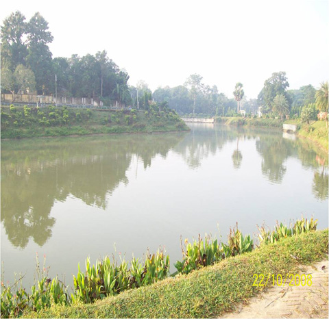

বৈচিত্র্যময় খাগড়াছড়ি
খাগড়াছড়ি জেলা সদর হতে ৫০কিঃ মিঃ উত্তর পশ্চিমে রামগড় উপজেলা পরিষদ কার্যালয়ের সম্মুখভাগে অবস্থিত। রামগড় উপজেলা চত্বরের সামনে অবস্থিত প্রায় ২৫০মিটার লম্বা এ হ্রদটির আকৃতি অনেকটা ইংরেজী অক্ষর ড এর অনুরূপ।
এতে আনন্দ ভ্রমণের জন্য রয়েছে পা দ্বারা চালিত ছোট বড় বেশ কয়েকটি প্রমোদ তরী। রামগড় পর্যটন লেকটি অত্যন্ত আকর্ষণীয় এবং দৃষ্টিনন্দন। চারপাশ বাঁধানো লেকটি রেলিং ঘেরা এবং বাহারী সাজে সজ্জিত। লেকটি খুব বেশী বড় না হলেও এর পরিবেশ অত্যন্ত চমৎকার।

লেকের উভয় পাশে যোগাযোগের জন্য মাঝখানে একটি সুদৃশ্য ঝুলন্ত সেতু নির্মিত হয়েছে। লেকে রয়েছে ঘুরে বেড়ানোর জন্য বোট এবং লেকের পাড়ে সুন্দর বাগান, সবুজ ঘাস, আধুনিক লাইটিং, বাঁধানো সিঁড়ি এবং পর্যটকদের বসার জন্য সুব্যবস্থা। পর্যটকদের জন্য গাড়ি পার্কিং, রান্নাবান্নার সুব্যবস্থাসহ পিকনিকের যাবতীয় সুযোগ সুবিধা এখানে রয়েছে।